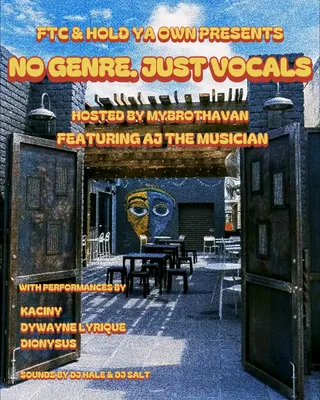

DJ Hale
pcola localdj
4 shows logged
on the record since December 2022, first seen at easy going gallery on a bill with ari atari and dj brody. most recently at the handlebar, September 2026.
- first loggedDec 29, 2022 · easy going gallery
- most played atthe handlebar ×2 shows
- busiest year2026 · 1 shows
- biggest lineup11 acts · Dec 2022
flyer wall

Sep 6, 2026 · the handlebar Aug 9, 2025 · hollice t. williams park
Aug 9, 2025 · hollice t. williams park Sep 27, 2024 · the handlebar
Sep 27, 2024 · the handlebar Dec 29, 2022 · easy going gallery
Dec 29, 2022 · easy going gallerypast shows
- 2026
- 6Sep 2026No Genre. Just Vocals, My Brotha Van, AJ The Musician, Kaciny, Dywayne Lyrique, Dionysus, DJ Hale, DJ Saltthe handlebar
- 2025
- 9Aug 2025Party In The Park: Community Bbq, DJ Hale, DJ Whipit, DJ Miamirochollice t. williams park
- 2024
- 27Sep 2024DJ Hale, Terrah Card, Andy Rodginous, Aniyah Jade Oshannsthe handlebar
- 2022
- 29Dec 2022Ari Atari, DJ Brody, DJ Wubz, Charlie-B, DJ Hale, Alonna Frost, Andy Rodginous, Foxy Lamore, Vantasia Divine, Tiffany Lahore, Sunny Dazeeasy going gallery
shared bills with
andy rodginous ×2aj the musicianalonna frostaniyah jade oshannsari ataricharlie-bdionysusdj brodydj miamirocdj saltdj whipitdj wubz
act pages are built automatically from the show archive, so something may be off: a misspelled name, a missing link, the wrong type, or a bad local/touring call. no disrespect meant. wrong on any of that, or want a listen link (youtube or bandcamp) or live footage added? send it in.